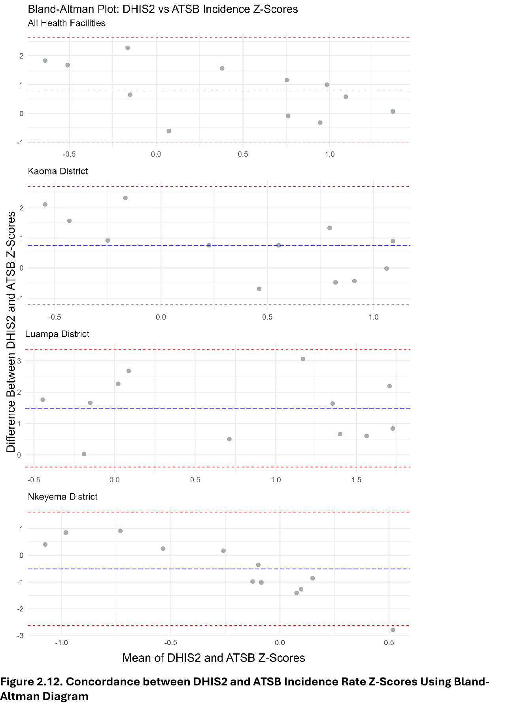

I spent a decade designing studies that turn ambiguous behavior on real-world data into defensible answers — surveys, interviews, claims, surveillance, and event-level operational data — across global health programs in sub-Saharan Africa and South Asia.
Two strands of that work map cleanly onto quantitative UX research: workflow and journey studies (identifying bottlenecks and drop-offs across a high-stakes care pathway) and measurement validation (quantifying how accurately a tracking system represents the underlying phenomenon it claims to measure). I am pivoting toward applying these methods to digital products in healthcare, and I have begun building product-side reps directly — instrumenting and shipping a production mobile application end-to-end.
Selected case studies
Workflow & Journey Research: A Pediatric Care Pathway in Rural Zambia
Doctoral research · Tulane School of Public Health · 2022–2025
Workflow researchMixed methods100+ interviewsField study
The user journey under study. The four-step pathway eligible children must complete to receive lifesaving care. Each handoff between steps is a place where the system can break down.
Question
Why are eligible children in three rural districts not completing the referral pathway from initial diagnosis to definitive care for severe malaria, and where in the journey is the system breaking down?
Approach
Mixed-methods process evaluation across community health workers, emergency transport providers, and health facilities. Combined 100+ semi-structured interviews, structured facility-readiness assessments, and caregiver questionnaires. Trained and managed a two-person team through the qualitative coding pass in NVivo.
Findings
Of 300 enrolled children, only 56% completed the full treatment cascade. The largest single drop-off occurred at health-facility severe-malaria diagnosis, and overall friction varied dramatically by district — Mwinilunga lost more than half of patients between referral completion and final treatment, while Serenje retained nearly all of them. Identified specific bottlenecks at three layers (community-level case identification, transit, and facility readiness) and characterized the friction patterns preventing completion of care.
Outputs
Manuscript submitted to PLOS One (March 2026); poster, ASTMH Annual Meeting 2023; recommendations informing program redesign at the Zambia National Malaria Elimination Program.
The funnel. Progression and attrition across the eight-step severe-malaria cascade of care. Each percentage is the share of enrolled children who reached that step. The biggest single drop is at the diagnosis-result handoff; cumulative attrition is 44 percentage points end-to-end.
UXR translation. This is journey research with a different label. Identifying where a real-world workflow breaks down — onboarding, preparation, task completion, return — is the same analytical posture quantitative UXR teams use to study patient or user lifecycles, with the same toolkit (interviews + structured assessments + survey instruments + segmentation across a heterogeneous user base).
Measurement Validation: Tracking System Accuracy vs. Ground-Truth Cohort
Doctoral research · Tulane School of Public Health · 2024–2025
Routine surveillance data from a national health information system is the basis for high-stakes resource allocation decisions. How accurately does this tracking system actually represent the underlying disease burden it claims to measure?
Approach
Compared routine DHIS2 surveillance estimates against a gold-standard prospective cohort across the same geographies and time windows. Used Bland-Altman analysis to assess agreement, scatterplots and correlation to assess concordance, and negative-binomial mixed-effects regression to quantify the magnitude of disagreement after adjusting for age and seasonality. Conducted sensitivity analyses to bound the policy conclusions the routine system alone could defensibly support.
Findings
DHIS2 systematically underestimated malaria incidence by 43% on average compared to the cohort (IRR 0.57, 95% CI 0.51–0.63). The gap widened sharply during peak transmission — DHIS2 detected 44% fewer cases in March and 70% fewer in June. Older children (5–14) were disproportionately under-counted in the routine system. District-level concordance varied: Bland-Altman analysis showed reasonable agreement in two districts and clear divergence in a third, defining the boundary of where the routine system could be trusted alone vs. where triangulation was required.
Outputs
Poster, ASTMH Annual Meeting 2024 (New Orleans); Aim 1 of dissertation (Tulane, June 2025); methodological framework being prepared as a manuscript.

Instrumentation accuracy. Bland-Altman analysis of agreement between the routine tracking system (DHIS2) and the gold-standard cohort (ATSB), overall and stratified by district. Each point is a health-facility-month; dashed lines mark the limits of agreement. Two districts (top three panels) show acceptable agreement; the third (bottom) does not — bounding where the routine system alone supports policy conclusions.
UXR translation. This is exactly the problem product analytics teams face when validating that event instrumentation actually measures what users do. Quantifying the gap between what your tracking system records and what is actually happening — and being explicit about which conclusions are defensible given that gap — is core to running a rigorous quant function on event-level product data.
Product Analytics from Zero: Filipino Mahjong Mobile Game
Independent project · 2025–present · Closed testing on Google Play
Could I build the entire product analytics function — from event taxonomy to monetization experimentation to cohort pipeline — on a real shipped product as a solo builder, using AI tools as the engineering force multiplier?
Approach
Designed, built, and shipped a Filipino mahjong mobile game end-to-end using Android Studio and Claude Code as the primary engineering collaborator. Designed a custom event taxonomy in Firebase Analytics; wired authentication and a real-time backend; instrumented AdMob for monetization experimentation; piped events into BigQuery for SQL-based cohort, retention, and engagement analyses on real player telemetry.
Status
In closed testing on Google Play; iOS deployment planned. Telemetry volume is intentionally early-stage — the value of the project is the analytics architecture and end-to-end ownership, not the volume of data collected so far.
Stack
Android Studio · Java/Kotlin · Firebase (Auth, Realtime DB, Analytics) · Google AdMob · BigQuery · Claude Code · Git/GitHub.
UXR translation. This is the practitioner analog of the quant UXR role: instrument the funnel cleanly, define what an "event" is and isn't, run monetization-or-flow experiments, build the SQL pipeline that turns raw telemetry into decisions about UI, timing, and feature priority. I built it specifically to demonstrate end-to-end ownership of a digital-product analytics stack, not just methodological fluency in the abstract.
Background & methods
PhD in International Health and Sustainable Development from Tulane (Aug 2025); MSPH in Global Disease Epidemiology and Control from Johns Hopkins. Ten-plus years applying quantitative methods — causal inference, quasi-experimental design, survey methodology, comparative-effectiveness analysis, and mixed-methods evaluation — to real-world questions for clients including USAID/PMI, the Zambia and Cameroon Ministries of Health, and global research consortia.
Daily working stack: SQL, Python, R, Stata, BigQuery, Firebase, Git. AI-native workflow: Claude, Claude Code, Copilot, Perplexity. Currently based in greater Boston.